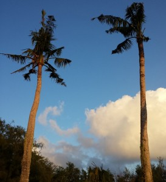

The Guam coconut rhinoceros beetle research team has documented some disturbing and unusual behavior of Oryctes rhinoceros (coconut rhinoceros beetle CRB), which has been published in the September issue of the Florida Entomologist journal. (http://dx.doi.org/10.1653/024.098.0341)
{kind=link}
The coconut rhinoceros beetle was first discovered on Guam in the tourist area of Tumon Bay in 2007, and since that time has spread throughout the entire island. In an attempt to eradicate the beetle, the CRB research team focused on sanitation to clean up possible breeding sites of decaying matter located in the many vacant lots in the area. Once sanitation was accomplished the team noticed there was no significant decrease in beetles found in traps around the area. This was puzzling. “Although we had found CRB eggs and larvae in the crowns of coconut trees, we thought this rarely happened.” said University of Guam extension entomologist Dr. Aubrey Moore.
Moore and the Guam Coconut Rhinoceros Eradication Project team decided to systematically investigate what was happening in the crowns of coconut trees in Tumon. The results of their study showed that all life stages of the beetle from egg, larva, pupa, and adult were found in the crowns of 10 out of 26 coconut trees that were felled.
“Although arboreal breeding of CRB larvae has been reported in the literature, the occurrence of this phenomenon on Guam is much higher than elsewhere” stated CRB Eradication Project director Roland Quitugua. The research team attributes this behavior to the loss of birds and rats through predation by the brown treesnake that was accidentally introduced to Guam after World War II. On other islands, rats and birds feed on larvae found in the crowns of trees.
The discovery of how widespread the breeding of coconut rhinoceros beetles in treetops is on Guam has lead to new sanitation recommendations for the control of the beetles. Palm trees that are manicured to remove dead fronds and other detritus are much less likely to harbor breeding coconut rhinoceros beetle populations.
For more information about CRB research, please visit: http://cnas-re.uog.edu/crb/.
Funded by United States Department of Agriculture (USDA) Animal and Plant Health Inspection Service, the USDA Forest Service, and the Government of Guam